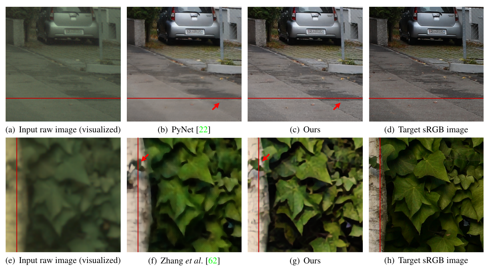
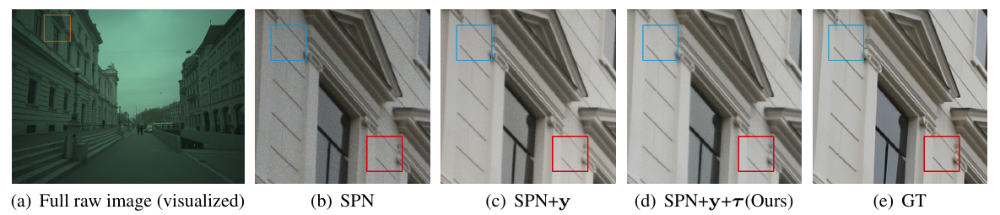
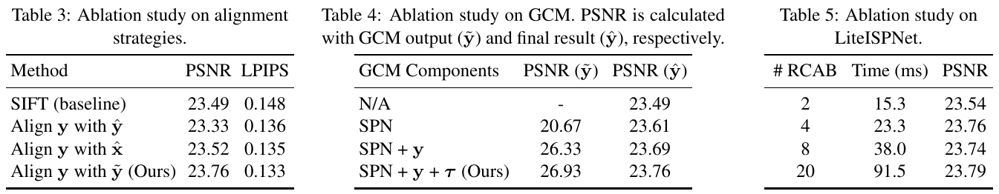
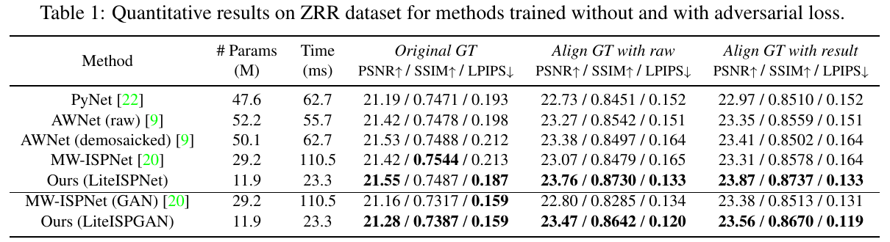
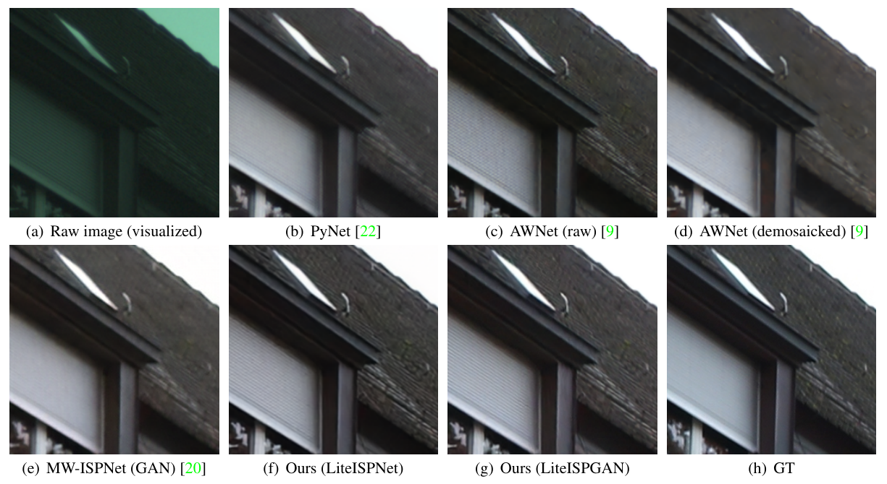

Learning RAW-to-sRGB Mappings with Inaccurately Aligned Supervision

1. 出发点 (Motivation)
「学一个 RAW → sRGB 映射，让手机拍出单反的效果」这件事从 DPED / PyNet 时代就有人做：拿手机 RAW 当输入、同场景的单反 JPEG 当目标，端到端训一个深度 ISP。难点不在网络结构上，而在数据对本身是脏的：
- 两台相机，必然错位。手机和单反的镜头位置、焦距、畸变、景深都不一样，场景里还有物体在动。ZRR 数据集只是用 SIFT + RANSAC 做了一次全局单应性对齐，再把互相关
< 0.9的 patch 扔掉（§4.1）。单应性只能处理平面，前后景深度不同造成的视差它处理不了，所以剩下的是一种空间变化的残余错位。 - 颜色差太大，光流用不了。按理说这种残余错位交给光流网络（PWC-Net、FlowNet）就能解决，可输入是线性、偏绿、带暗角的 Bayer RAW，目标是经过单反 ISP 调过色调和对比度的 sRGB，两者亮度和颜色差得太远，光流的亮度一致性假设直接失效。
用错位数据硬训，网络在每个像素上看到的目标其实是「附近几个位置的平均」，L1 的最优解就是糊。之前的补救要么加大模型、加 global context block（AWNet），要么换成对错位鲁棒的 CoBi loss（Zoom to Learn），但都是在容忍错位，没有消除错位，结果还是糊（Fig. 1(f)）。
本文的切入点只有一句话：错位之所以对不齐，是因为颜色不一致；那就先在训练时把颜色对齐，再交给现成的光流去对齐空间。而且这个「颜色对齐器」只在训练时存在，推理时零开销。
ISP
相机里把传感器原始数据变成能看的照片的那条流水线：去马赛克、白平衡、色彩校正、色调映射、降噪、锐化、gamma。
Bayer RAW
传感器原始数据，每个像素只记录 R/G/B 之一，线性、高位深（10–14 bit），还没做任何调色。
packed RAW（4 通道）
把 2×2 的 RGGB 格子拆成 4 个半分辨率通道，网络直接吃这个。
GCM
Global Color Mapping，本文的「颜色对齐器」：只做逐像素变换，把手机 RAW 的颜色变成像单反的，像素位置完全不动。
SPN
Spatially Preserving Network，GCM 的主干，全部由 1×1 卷积组成，因此不可能引入像素位移。
GuideNet
看一眼「RAW + 目标 sRGB」整张图，输出一个全局向量去调制 SPN 的特征，告诉它这张图该往什么颜色变。
PWC-Net
经典的光流估计网络（金字塔 + warp + cost volume），本文直接拿预训练权重冻结使用。
暗角 (vignetting)
画面从中心到四周逐渐变暗的现象，手机 RAW 尤其明显，是纯全局颜色映射拟合不了的空间项。
ZRR / SR-RAW
ZRR：华为 P20 RAW ↔ 佳能 5D4 sRGB，约 4.8 万对 448×448 patch。SR-RAW：同一单反不同焦距拍的 RAW/sRGB 对，用来做 RAW 超分。
2. 方法 (Method)

2.1 问题形式化：先造对齐的 GT，再学映射
记手机 RAW 为 \(x\)，单反 sRGB 为 \(y\)。要学的是
—— 翻译: LiteISPNet（记作 I）吃进 RAW x，吐出一张想要看起来像单反拍的 sRGB ŷ。
问题在于 \(y\) 和 \(x\) 没对齐。一个直觉做法是拿网络输出 \(\hat y\) 去和 \(y\) 求光流、把 \(y\) 对齐到 \(\hat y\) 上。作者实验发现这样更糟（Table 3：23.33 dB，低于 SIFT baseline 的 23.49）。原因是 \(\hat y\) 本身由一个大感受野网络产生，它自己就可能带像素偏移，用它当锚点等于让「对齐目标」跟着网络一起漂。
所以锚点必须是一张颜色像 \(y\)、几何上严格等于 \(x\) 的图。这就是 GCM 的工作：
—— 翻译: 先把 RAW 简单插值去马赛克得到 x̂，GCM 参考目标 y 和坐标图 τ，把 x̂ 逐像素「调色」成 ỹ；然后用冻结的光流网络 F 求 ỹ 到 y 的光流 Ψ，再用 Ψ 把 y 扭到 ỹ（也就是 x）的坐标系里，得到对齐好的监督 yʷ。
类比：两个人用不同语言描述同一幅画，你没法逐字对照。先找一个只换词、不换语序的翻译（GCM 逐像素，不动位置），把甲的话翻成乙的语言，再逐句对齐（光流）就容易了。翻译只要「能对齐」就够，不需要完美；对齐完以后真正学习的还是甲到乙的完整映射（LiteISPNet）。
2.2 GCM：只调色、不挪位置的颜色对齐器
GCM 要同时满足两个条件：(i) 颜色要像 \(y\)，好让光流算得准；(ii) 每个像素的位置必须和 \(\hat x\) 一模一样。条件 (ii) 用结构保证：SPN 全是 1×1 卷积，等价于对每个像素独立跑一个 MLP，物理上不可能把像素搬家。条件 (i) 借用训练时才有的 \(y\)：GuideNet 吃 \([\hat x, y, \tau]\)，用较大的 7×7 卷积（对残余错位不敏感）加全局平均池化，压出一个 64 维 guidance 向量去调制 SPN 的特征。
repo/models/zrrjoint_model.py:L120-L152 — GCM 结构与前向：GuideNet 出全局向量，1×1 卷积 SPN 逐像素调色，残差加回 x̂
self.guide_net = N.seq(
N.conv(guide_input_channels, self.ch_1, 7, stride=2, padding=0, mode='CR'),
N.conv(self.ch_1, self.ch_1, kernel_size=3, stride=1, padding=1, mode='CRC'),
nn.AdaptiveAvgPool2d(1),
N.conv(self.ch_1, self.ch_2, 1, stride=1, padding=0, mode='C')
)
self.align_head = N.conv(align_input_channels, self.ch_2, 1, padding=0, mode='CR')
self.align_base = N.seq(
N.conv(self.ch_2, self.ch_2, kernel_size=1, stride=1, padding=0, mode='CRCRCR')
)
self.align_tail = N.seq(
N.conv(self.ch_2, 3, 1, padding=0, mode='C')
)
def forward(self, demosaic_raw, dslr, coord=None):
demosaic_raw = torch.pow(demosaic_raw, 1/2.2)
if self.gcm_coord:
guide_input = torch.cat((demosaic_raw, dslr, coord), 1)
base_input = torch.cat((demosaic_raw, coord), 1)
else:
guide_input = torch.cat((demosaic_raw, dslr), 1)
base_input = demosaic_raw
guide = self.guide_net(guide_input)
out = self.align_head(base_input)
out = guide * out + out
out = self.align_base(out)
out = self.align_tail(out) + demosaic_raw
return out
和论文对应的几点：guide_net 第一层是 7×7、stride 2（Table A）；align_head/base/tail 全部 kernel_size=1，就是 SPN；out = guide * out + out 是「1 + guidance」形式的逐通道调制。论文里没写的两点：GCM 的输入先做了 pow(·, 1/2.2) 的 gamma 预校正（L137），输出是残差形式 align_tail(out) + demosaic_raw（L150）。所以 GCM 学的是在「gamma 后的手机 RAW」基础上的颜色修正量，而不是从零生成。
为什么还要喂坐标图 \(\tau\)？因为暗角。手机 RAW 从中心到边缘亮度衰减，这是一个依赖空间位置的增益，纯颜色映射表达不了。把 \((u,v)\) 坐标当两个额外通道喂给 SPN，1×1 MLP 就能学出「颜色 × 位置」的联合函数（Fig. 5 / Table 4 里 +τ 让 GCM 输出 PSNR 从 26.33 升到 26.93）。

2.3 光流 warp 与有效掩码
有了 \(\tilde y\)，用冻结的 PWC-Net 求光流，再用双线性 grid_sample 把 \(y\) 拉回来。warp 时 \(y\) 的边界外没有像素，这些位置不能当监督，所以需要一个掩码：
—— 翻译: 拿一张全 1 的图跟着 y 一起 warp；warp 之后还严格等于 1 的像素说明它的采样点完全落在 y 的画面内，算有效，否则（采到了画面外的 0）就从损失里抠掉。
repo/models/base_model.py:L259-L273 — get_backwarp / get_flow：给 y 拼一个全 1 通道一起 warp，阈值 0.999 得到 mask；光流在 no_grad 下估计
def get_backwarp(self, tenFirst, tenSecond, net, flow=None):
if flow is None:
flow = self.get_flow(tenFirst, tenSecond, net)
tenoutput = self.backwarp(tenSecond, flow)
tenMask = tenoutput[:, -1:, :, :]
tenMask[tenMask > 0.999] = 1.0
tenMask[tenMask < 1.0] = 0.0
return tenoutput[:, :-1, :, :] * tenMask, tenMask
def get_flow(self, tenFirst, tenSecond, net):
with torch.no_grad():
net.eval()
flow = self.estimate(tenFirst, tenSecond, net)
return flow
backwarp（L236–L257）里 tenInput = torch.cat([tenInput, self.backwarp_tenPartial[index]], 1) 给输入拼了一个全 1 通道，warp 后取最后一个通道当 mask，阈值 > 0.999 正好是 Eq. (6) 的 \(1-\epsilon\)。要注意 get_flow 包在 torch.no_grad() 里，并且强制 net.eval()：光流对 GCM 没有梯度。
2.4 联合前向：一次 forward 同时造监督、跑 ISP
repo/models/zrrjoint_model.py:L64-L87 — 训练前向：GCM → 光流 warp → LiteISPNet，并对输出乘 mask；测试时改为把 GT 对齐到网络输出
def forward(self):
self.GCMModel_out = self.netGCMModel(self.data_raw_demosaic, self.data_dslr, self.data_gcm_coord)
self.dslr_warp, self.dslr_mask = \
self.get_backwarp(self.GCMModel_out, self.data_dslr, self.netPWCNET)
N, C, H, W = self.data_raw.shape
index = str(self.data_raw.shape) + '_' + str(self.data_raw.device)
if index not in self.data_ispnet_coord:
if self.opt.pre_ispnet_coord:
data_ispnet_coord = get_coord(H=H, W=W)
else:
data_ispnet_coord = get_coord(H=H, W=W, x=1, y=1)
data_ispnet_coord = np.expand_dims(data_ispnet_coord, axis=0)
data_ispnet_coord = np.tile(data_ispnet_coord, (N, 1, 1, 1))
self.data_ispnet_coord[index] = torch.from_numpy(data_ispnet_coord).to(self.data_raw.device)
self.data_out = self.netLiteISPNet(self.data_raw, self.data_ispnet_coord[index])
if self.isTrain:
self.GCMModel_out = self.GCMModel_out * self.dslr_mask
self.data_out = self.data_out * self.dslr_mask
else:
self.dslr_warp, self.dslr_mask = \
self.get_backwarp(self.data_out, self.data_dslr, self.netPWCNET)
这里能看清「联合学习」实际耦合得有多松。GCM 和 LiteISPNet 共享的只有 dslr_warp / dslr_mask 这两个张量，而它们由 no-grad 光流产生，所以 LiteISPNet 的损失不会回传到 GCM，GCM 的损失也不会回传到 LiteISPNet。两者的联系是单向的：GCM 学得越像 \(y\)，光流越准，\(y^w\) 越干净，LiteISPNet 拿到的监督就越好。L82–L87 还有一个评测细节：测试时改成「把 GT 对齐到网络输出」，这就是 Table 1 里 Align GT with result 那一列的来源。
2.5 LiteISPNet 与损失
LiteISPNet 是 MW-ISPNet 的瘦身版：多级小波（DWT/IWT）U-Net，每个残差组里的 RCAB 从 20 个砍到 4 个，并在每次小波分解前加一个卷积 + 残差组。作者的论点是监督干净了，网络就不需要那么大：Table 5 里 RCAB 从 4 加到 20，PSNR 只从 23.76 涨到 23.79，耗时却从 23.3 ms 涨到 91.5 ms。
repo/models/zrrjoint_model.py:L221-L243 — LiteISPNet 前向：packed RAW 先 gamma，头部特征拼 2 通道坐标图，再走 3 级小波 U-Net，PixelShuffle 回全分辨率
def forward(self, raw, coord=None):
# input = raw
input = torch.pow(raw, 1/2.2)
h = self.head(input)
if self.pre_ispnet_coord:
pre_coord = self.pre_coord(raw) * 0.1
pre_coord = torch.clamp(pre_coord, -1, 1)
pre_coord = pre_coord.unsqueeze(dim=2).unsqueeze(dim=3)
pre_coord = pre_coord + coord
h_coord = torch.cat((h, pre_coord), 1)
else:
h_coord = torch.cat((h, coord), 1)
d1 = self.down1(h_coord)
d2 = self.down2(d1)
d3 = self.down3(d2)
m = self.middle(d3) + d3
u3 = self.up3(m) + d2
u2 = self.up2(u3) + d1
u1 = self.up1(u2) + h
out = self.tail(u1)
return out
损失方面，GCM 用带掩码的 L1，LiteISPNet 用带掩码的 L1 + VGG 感知损失：
—— 翻译: 两个网络都只在「warp 有效」的像素上和对齐后的单反图比；GCM 只比像素值，LiteISPNet 还要在 VGG-19 特征空间里像，λ 都取 1。总损失就是两者相加 L = L_GCM + L_ISP。
GAN 版本（LiteISPGAN）再加一项 LSGAN 损失 \(\lambda_{GAN}\cdot\frac12\mathbb{E}[(D(\mathcal{I}(x))-1)^2]\)，\(\lambda_{GAN}=0.01\)，判别器是 54×54 PatchGAN。
repo/models/zrrjoint_model.py:L89-L96 — 实际总损失：比论文 Eq. (11) 多了 0.15 × (1 − SSIM)
def backward(self):
self.loss_GCMModel_L1 = self.criterionL1(self.GCMModel_out, self.dslr_warp).mean()
self.loss_LiteISPNet_L1 = self.criterionL1(self.data_out, self.dslr_warp).mean()
self.loss_LiteISPNet_SSIM = 1 - self.criterionSSIM(self.data_out, self.dslr_warp).mean()
self.loss_LiteISPNet_VGG = self.criterionVGG(self.data_out, self.dslr_warp).mean()
self.loss_Total = self.loss_GCMModel_L1 + self.loss_LiteISPNet_L1 + \
self.loss_LiteISPNet_VGG + self.loss_LiteISPNet_SSIM * 0.15
self.loss_Total.backward()
数值小例子：假设某个像素在 \(y\) 里实际对应 \(x\) 中右移 3 像素的位置。SIFT 单应性对平面背景是准的，但这个像素属于前景，残余偏移 3 px。不对齐直接训，网络在这里看到的目标是前景边缘 3 px 外的颜色，L1 只能折中出一条模糊的过渡带。GCM + 光流后，\(\Psi\) 在这个像素上估出约 (−3, 0)，\(y^w\) 把正确颜色搬回来，监督就变清楚了。如果它在画面边缘、被搬出了画面，\(m_i=0\)，干脆不监督。
消融决策表：
| 组件 | 起点 | 消融方向 | 最终选择 | 为什么 |
|---|---|---|---|---|
| 对齐锚点 | 数据集自带 SIFT 单应性 (23.49 dB) | 对齐到 ŷ / 对齐到 x̂ / 对齐到 ỹ | 对齐到 GCM 输出 ỹ (23.76 dB) | ŷ 是大感受野网络输出、本身会漂 (23.33)；x̂ 位置对但颜色差太大，光流不准 (23.52)；ỹ 同时满足「位置等于 x、颜色像 y」 |
| GCM 主干 | 无 GCM | SPN（1×1 卷积） | SPN | 逐像素 MLP 从结构上保证零位移；只加 SPN 就 +0.12 dB |
| GCM 引导 | 无 | + 目标 y 的全局 guidance | 加 | 训练时 y 免费可得；ỹ 的 PSNR 从 20.67 跳到 26.33，光流更准 |
| 坐标输入 τ | 无 | + 2 通道坐标 | 加 | 暗角是空间相关增益，纯颜色映射表达不了；ỹ 26.33→26.93，最终 23.69→23.76 |
| 每个 RG 的 RCAB 数 | 20（MW-ISPNet） | 2 / 4 / 8 / 20 | 4 | 监督干净后容量不再是瓶颈：4→20 只多 0.03 dB，耗时翻 4 倍 |

3. 结论 (Key findings)

- ZRR（手机→单反）：LiteISPNet 在 Align GT with raw 下 PSNR / SSIM / LPIPS = 23.76 / 0.8730 / 0.133，对比 MW-ISPNet 23.07 / 0.8479 / 0.165、PyNet 22.73 / 0.8451 / 0.152、AWNet(raw) 23.27 / 0.8542 / 0.151。参数 11.9M（MW-ISPNet 29.2M、PyNet 47.6M），448×448 推理 23.3 ms（MW-ISPNet 110.5 ms）。
- 原始 GT 口径下优势很小：PSNR 21.55 vs MW-ISPNet 21.42，SSIM 0.7487 反而低于 MW-ISPNet 的 0.7544。只要 GT 本身没对齐，像素指标基本测的是「谁更会猜错位」，这也是作者额外报两种对齐口径的原因。
- GAN 版：LiteISPGAN 在 Align GT with raw 下 23.47 / 0.8642 / 0.120，LPIPS 优于 AIM 2020 感知赛道冠军 MW-ISPNet(GAN) 的 0.134。
- SR-RAW（4× RAW 超分，换 SRResNet 主干）：Align GT with raw 下 PSNR 22.00 / LPIPS 0.346，Zhang et al.（CoBi loss）只有 17.43 / 0.440；原始 GT 口径下 17.74 vs 16.03。和 Zhang et al. 用的是同一个 SRResNet 主干，所以差距可以归到监督方式上。
- 消融：对齐策略（Table 3）是最大的单项来源，比 SIFT baseline 高 +0.27 dB，LPIPS 从 0.148 降到 0.133。
- 重划分训练/测试集（附录 Table E，9:1）：LiteISPNet 23.31 / 0.8747 / 0.131，仍优于 MW-ISPNet 23.00 / 0.8530 / 0.166。

4. 实现细节 (Implementation notes)
论文与代码的对照，以及代码里才看得到的细节：
- 损失比论文多一项 SSIM。论文 Eq. (7)/(11) 只有 L1 + VGG，代码总损失是
L1_GCM + L1 + VGG + 0.15·(1−SSIM)（repo/models/zrrjoint_model.py:L94-L95），GAN 版同样如此并加0.01·GAN（repo/models/zrrganjoint_model.py:L118-L120）。这是论文与代码的不一致。 - 训练轮数不一致。论文写 100 epoch、50 epoch 后学习率减半（§4.1），官方脚本是
--niter 80 --lr_decay_iters 40（repo/train_zrr.sh）。不一致，复现时按哪个都有可能。 - LiteISPNet 也吃坐标图，论文没写。
head输出 64 通道后拼了 2 通道坐标，down1的输入是ch_1+2（repo/models/zrrjoint_model.py:L171-L176、L232）。论文 Table B 写的是RG 64→64。另有一个PreCoord分支（L245-L276），从 RAW 回归 patch 在整幅图中的位置并加载./ckpt/coord.pth，它在options/base_options.py:L59默认是True，但官方训练/测试脚本都显式设成--pre_ispnet_coord False。关掉时喂的是get_coord(H, W, x=1, y=1)，即每个 patch 都一样的局部 [−1,1] 网格（L72-L75），对 ISP 网络来说几乎是常量。 - GCM 的坐标也是 patch 局部的。
ZRRDataset里self.coord = get_coord(H=448, W=448, x=1, y=1)（repo/data/zrr_dataset.py:L57），而get_coord的默认参数x=448/3968, y=448/2976才对应「patch 在整幅 3968×2976 图里的绝对比例」（repo/util/util.py:L162）。所以 τ 并不知道这个 patch 在原图的哪个角上。GCM 之所以还能补暗角，我的推测是靠 GuideNet 同时看到了 \(y\)，能从「这一块 RAW 比 GT 暗多少、往哪边渐暗」推断出局部的渐变方向，再配合局部坐标拟合一个线性增益。论文说「把 τ 喂进去处理暗角」，没交代这一层。 - 光流冻结、无梯度，所以「联合」是前向耦合。
set_requires_grad(self.netPWCNET, False)（repo/models/zrrjoint_model.py:L38）加上get_flow里的torch.no_grad()+net.eval()（repo/models/base_model.py:L269-L273）。两个网络各自有优化器（L41-L49），梯度互不相通。 - 掩码只抠画面外像素，不处理遮挡。mask 由 warp 一张全 1 图得到（
repo/models/base_model.py:L251-L262），只能识别采样点跑出 \(y\) 边界的位置。前景遮挡、视差造成的「y 里根本看不到」区域依然被当作有效监督。论文没有前后向一致性检查。 - VGG 损失在半分辨率上算，且先乘 mask 再过 VGG。
VGGLoss.forward先interpolate(scale_factor=0.5)（repo/models/losses.py:L175-L181），而 forward 里已经把data_out乘了 mask（zrrjoint_model.py:L84），dslr_warp在get_backwarp里也乘过 mask。所以实际算的是 \(\lVert\phi(m\circ\hat y)-\phi(m\circ y^w)\rVert_1\)，不是论文写的 \(\lVert m\circ(\phi(\hat y)-\phi(y^w))\rVert_1\)。差别很小，但掩码边界会在 VGG 特征里形成人为的强边缘。 - RAW 预处理是 P20 专用常数。
remove_black_level(img, black_lv=63, white_lv=4*255)（repo/util/util.py:L139-L141），packed 通道顺序是(B, Gb, R, Gr)（L148-L155），去马赛克用colour_demosaicing的双线性（L157-L160）。换传感器（比如 iPhone 的 DNG）时这三处都要改。 - SR-RAW 分支偷偷用了相机白平衡。GCM 输出和 SRResNet 输出都会乘上从
wb.txt读出的 WB 增益（gamma 化后，repo/models/srrawjoint_model.py:L124-L128；增益来自repo/data/srraw_dataset.py:L164-L174）。论文里没提这个物理先验。下面是对应代码，以及 SR-RAW 「低分辨率求光流 → 上采样 ×4 → warp 高分辨率 GT」的做法（附录 E）：
repo/models/srrawjoint_model.py:L64-L82 — SR-RAW：在 LR 尺度上用 GCM 输出与下采样 GT 求光流，光流上采样 4 倍后 warp HR GT
def forward(self):
N, C, H, W = self.data_raw_demosaic.size()
down_dslr = F.interpolate(input=self.data_dslr, size=(H, W),
mode='bilinear', align_corners=True)
self.GCMModel_out = self.netGCMModel(self.data_raw_demosaic, down_dslr, self.gcm_coord)
self.GCMModel_out = self.post_wb(self.GCMModel_out)
self.data_out = self.netSRResNet(self.data_raw) #, self.isp_coord[index])
self.data_out = self.post_wb(self.data_out)
flow = self.get_flow(self.GCMModel_out, down_dslr, self.netPWCNET)
up_flow = F.interpolate(input=flow, size=(H*4, W*4),
mode='bilinear', align_corners=True) * 4.
self.dslr_warp, self.dslr_mask = self.get_backwarp('/', self.data_dslr, self.netPWCNET, up_flow)
self.down_dslr_warp = F.interpolate(input=self.dslr_warp, size=(H, W),
mode='bilinear', align_corners=True)
self.down_dslr_mask = F.interpolate(input=self.dslr_mask, size=(H, W),
mode='bilinear', align_corners=True)
repo/models/srrawjoint_model.py:L124-L128 — post_wb：用相机记录的白平衡增益（gamma 化）乘到输出上
def post_wb(self, img):
img[:,0,...] *= torch.pow(self.wb[:,0,...], 1/2.2)
img[:,1,...] *= torch.pow(self.wb[:,1,...], 1/2.2)
img[:,2,...] *= torch.pow(self.wb[:,3,...], 1/2.2)
return img
- GAN 判别器的「真」样本是 warp 后的 GT。
predict_real = self.netDiscriminator(self.dslr_warp)（repo/models/zrrganjoint_model.py:L105）。也就是说判别器学的「单反质感」，是经过一次双线性重采样、边缘带黑色 mask 的单反图。 - 评测：
metrics.py对输出乘warp_gt_mask后与warp_gt比（repo/metrics.py:L71-L76），LPIPS 用 AlexNet v0.1（论文 §4.1）。
5. 批判性总结 (Critical assessment)
Strengths
- 诊断准确，修法很便宜：把「对不齐」归因到「颜色不一致导致光流失效」，用一个只在训练时存在、零推理开销的 1×1 网络解掉。推理侧就是一个普通的小网络。
- 用结构而不是损失来保证不位移：SPN 全 1×1，「不挪像素」是结构上的硬约束，不需要靠正则去调。这个设计思路可以直接搬到别的地方。
- 训练时允许看答案：GuideNet 吃 GT 是合法的，因为 GCM 推理时被丢弃。这种「教师可以作弊、学生不行」的不对称利用得很干净。
- 把评测口径问题摆上台面：同时报三种 GT 口径，坦白承认原始 GT 口径下几家差距很小。
- 同主干对照：SR-RAW 上与 Zhang et al. 同用 SRResNet，能把增益归因到监督。
Limitations / open questions
- 遮挡 / 视差区域没有处理：mask 只标画面外（§4 第 6 条）。手机和单反基线不同，前景物体边缘的遮挡区会把错误颜色当监督，这正是最影响「细节、质感」的地方。
- warp 本身会让 GT 变软：双线性
grid_sample对亚像素位移做插值，本质是低通。网络被训练去拟合一张已经轻微变软的单反图，GAN 判别器的真样本也是这张图（§4 第 10 条）。论文没量化这部分损失的高频。 - 网络同时在学颜色和细节：LiteISPNet 端到端拟合单反的整套风格，颜色、色调、锐化、降噪都在一个黑盒里。GCM 学到的颜色映射在训练后直接丢掉，没有作为可解释的颜色模型被利用。
- 光流的可靠性被默认：PWC-Net 在 ỹ（仍带手机噪声、未降噪）和 y（单反、干净）之间求流。作者说「仍能稳健估计」，但没有给流的误差统计，也没有对失败案例分析。
- 评测口径对自己有利：Align GT with raw 用的正是本文的 GCM + PWC-Net 去对齐 GT，而本文的网络恰好是用这套对齐训出来的，口径与训练目标同源。Align GT with result 更公平一些，在这个口径下 LiteISPNet 领先 MW-ISPNet 0.56 dB，仍然领先，但幅度比 with raw 的 0.69 dB 小。
- 复现细节不一致：SSIM 项、训练轮数、LiteISPNet 的坐标输入都与论文不符（§4）。
- 感知质量上限低：主损失是 L1 + VGG（+SSIM），GAN 权重只有 0.01，本质还是回归模型。补的是「对齐后可见的」细节，补不出手机根本没拍到的高频。
When to use / not use
- 用：手上有两台相机的配对数据（手机 vs 单反、广角 vs 长焦），残余错位在几个到十几个像素量级、以视差为主，想要一个轻量、可部署的 RAW→sRGB 模型。或者只想要一个数据清洗工具，把配对数据对齐好再喂给别的模型。
- 不用：错位大到光流失效（大视差、动态场景、不同时刻拍摄）；目标是生成式地补出手机没有的纹理；或者需要颜色可控、可解释（例如必须精确匹配某相机的色彩科学），这时更适合先用物理颜色模型，再让网络只学残差。
延伸阅读 (Further reading)
交叉验证比较：同一个问题（手机/低端 RAW → 高端相机 sRGB，配对数据未对齐），三种处理思路：
| 工作 | 核心结论 | 关键观察 | 与本文的异 / 同 |
|---|---|---|---|
| 本文 (LiteISPNet) | 先消除错位：GCM 统一颜色 → 光流对齐 → 干净监督；小网络就够 | 监督干净后 RCAB 4→20 只多 0.03 dB；对齐到 ŷ 反而变差 | — |
| [[pynet-2020|PyNet]] (Ignatov et al., CVPRW 2020) | 用大容量多尺度金字塔网络端到端学整条 ISP，并发布 ZRR 数据集 | 只依赖数据集自带的 SIFT/RANSAC 全局对齐；本文复测其结果偏糊、带像素偏移（Fig. 1b），参数 47.6M | 同：同一数据集、同为端到端深度 ISP。异：PyNet 靠容量去「容忍」错位，本文在数据层面「消除」错位，参数量差约 4 倍 |
| [[zoom-to-learn-2019|Zoom to Learn]] (Zhang et al., CVPR 2019) | 用 CoBi（contextual bilateral）损失在邻域里找最佳匹配，对轻度错位鲁棒；发布 SR-RAW | 基于 patch 匹配，处理不了因深度不同而空间变化的错位；本文同主干对比中其结果明显偏糊（17.43 vs 22.00 dB，Align GT with raw） | 同：都承认像素级 L1 在错位数据上会糊。异：CoBi 改的是损失（容忍错位），本文改的是监督本身（对齐） |
分歧的成因主要在错位的性质上。CoBi 和大网络都隐含假设错位是小而局部均匀的，用损失或容量去平均掉；本文认为错位里有一大块是空间变化的视差，只能靠稠密光流解决，而光流的前提是颜色一致，这才引出 GCM。另外评测口径也是一个原因：原始 GT 口径下三者差距很小，差距是在对齐 GT 之后才拉开的，所以「谁更好」部分取决于你是否相信对齐后的 GT。
相关工作
- pynet-2020 — ZRR 数据集与端到端 ISP 基线
- zoom-to-learn-2019 — SR-RAW 数据集与 CoBi 损失
- omgsr-2025 — 生成式（扩散）一步真实超分，是「补高频纹理」那一侧的代表
- diffusion-sr-2026 — 扩散超分调研
6. 研究启发 (Transferable takeaways)
专项背景：目标是把 iPhone 照片（优先从 Bayer RAW 出发）在细节、质感上迁移成某台目标相机的效果。已有思路是：颜色用物理方法（DNG 色彩矩阵 / 色卡）对齐，生成模型只补高频纹理，多帧合成提供真实信息。以下从这个目标出发。
1. 对齐的锚点必须「几何属于输入、颜色属于目标」
这是本文最值得借鉴的一点。iPhone↔目标相机配对数据一定会错位，正确做法不是把目标对齐到网络输出（会漂，Table 3），也不是直接对齐到原始 RAW（颜色差太大，流不准），而是先造一张逐像素变换出来的「目标色彩版 iPhone 图」，再拿它和目标图求稠密光流。整条数据管线可以直接照搬。
2. 物理颜色管线可以替代 GCM
GCM 只是一个「能让光流工作」的逐像素颜色映射。专项里已经计划用 DNG ColorMatrix / ForwardMatrix + 色卡标定做颜色对齐，这本身就是一个零位移的逐像素映射，可以直接当 GCM 用，不需要训练，也不会偷看 GT。暗角则可以用 DNG 的 OpcodeList（GainMap）或平场标定来补，不必像本文那样靠坐标通道去学。
3. 颜色和纹理分开监督
本文让一个网络同时学颜色和细节，GCM 学到的颜色在训练后直接丢掉。对专项更合适的拆法是：物理颜色管线把 iPhone RAW 和目标图统一到同一色彩空间，光流对齐后，网络（或生成模型）只学高频残差，例如只在 Laplacian 高频带或 DWT 高频子带上算损失。这样颜色精确可控，生成模型的容量全部用在质感上。
4. 补上遮挡掩码，别对 warp 后的 GT 做像素级硬监督
本文的 mask 只抠画面外区域。手机和相机基线不同，前景边缘的遮挡正是纹理最密的地方，建议加前后向光流一致性检查（或 RAFT 的置信度）来剔除遮挡像素。另外双线性 warp 会让 GT 变软，对「质感」类目标，可以在 warp 后的 GT 上只算低频/颜色损失，高频交给对小错位不敏感的感知/对抗/分布类损失（CoBi、LPIPS、GAN、扩散先验）。
5. 多帧可以同时解决对齐和信息不足
本文是单帧，补不出 iPhone 没拍到的高频。专项计划的多帧合成可以和本文的对齐思路串起来：iPhone 连拍先做 burst 对齐融合得到更干净、信息更多的 RAW，再按本文的方法与目标相机图对齐，构造配对数据。更干净的输入也会让「颜色对齐 → 光流」这一步更可靠，因为本文的光流是在带噪声的 ỹ 上算的。
6. 反直觉点：监督干净了，网络可以小 4 倍
RCAB 4→20 只多 0.03 dB，而对齐带来 +0.27 dB。在这类配对数据任务里，数据对齐的收益远大于加网络容量。专项初期应该先把配对数据的对齐质量做到位，再考虑上大模型或扩散模型。